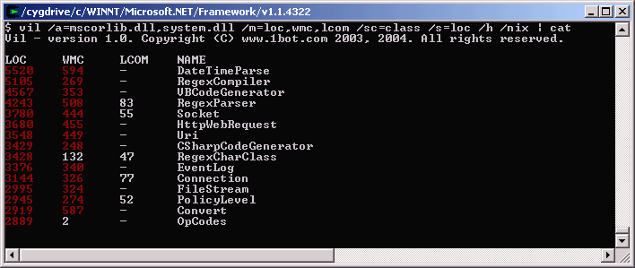
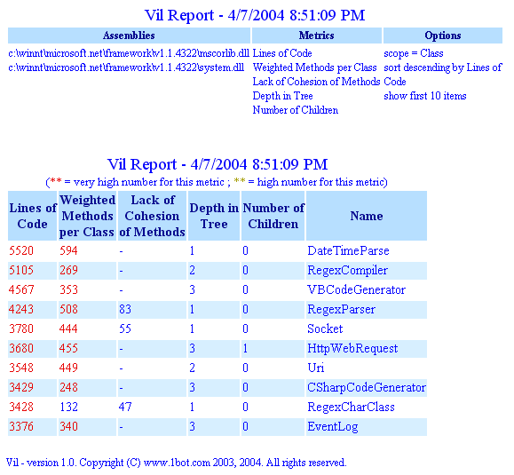
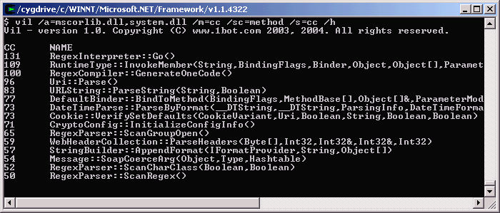
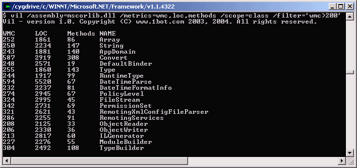
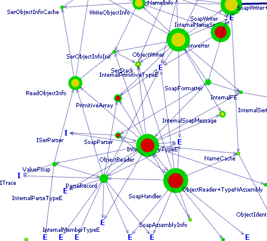

Screenshots...
Commandline example - Look at large/complex classes:

Commandline example - Look at attributes of largest classes in HTML:

Commandline example - Find most complex methods:

Commandline example - Find complex classes:

Graph view of assemblies - Visualization (not yet released):

©2003-2004 1bot.com. All rights reserved.